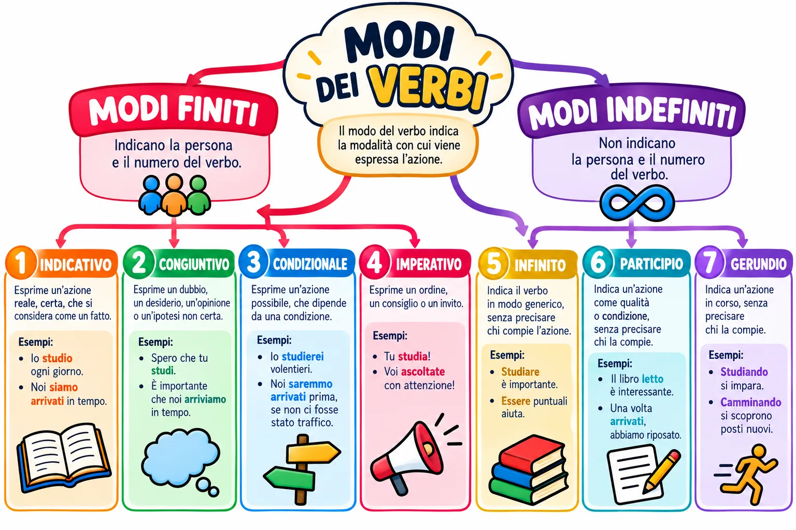

Mappa · Italiano
Mappa dei modi dei verbi

Apri a schermo intero Scarica la mappa (PNG)

Versione testuale della mappa
Modi dei verbi
Il modo del verbo indica la modalità con cui viene espressa l'azione.
Modi finiti
Indicano la persona e il numero del verbo.
- Indicativo: esprime un'azione reale, certa, che si considera come un fatto. Esempi: Io studio ogni giorno. Noi siamo arrivati in tempo.
- Congiuntivo: esprime un dubbio, un desiderio, un'opinione o un'ipotesi non certa. Esempi: Spero che tu studi. È importante che noi arriviamo in tempo.
- Condizionale: esprime un'azione possibile, che dipende da una condizione. Esempi: Io studierei volentieri. Noi saremmo arrivati prima, se non ci fosse stato traffico.
- Imperativo: esprime un ordine, un consiglio o un invito. Esempi: Tu studia! Voi ascoltate con attenzione!
Modi indefiniti
Non indicano la persona e il numero del verbo.
- Infinito: indica il verbo in modo generico, senza precisare chi compie l'azione. Esempi: Studiare è importante. Essere puntuali aiuta.
- Participio: indica un'azione come qualità o condizione, senza precisare chi la compie. Esempi: Il libro letto è interessante. Una volta arrivati, abbiamo riposato.
- Gerundio: indica un'azione in corso, senza precisare chi la compie. Esempi: Studiando si impara. Camminando si scoprono posti nuovi.
← Tutte le mappe
Officina Didattica · Carlo Murru. Mappa con licenza
CC BY-NC-SA 4.0.